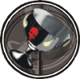

|

|
>> Содержание / Список кланов /
  KoDG KoDG
В те времена когда в Британии правили рыцари Круглого Стола во главе с королём Артуром и зародилась легенда о Священном Граале - чаше, в которую была собрана Кровь Христа и испивший из Которой получает прощение грехов и вечную жизнь.
На поиски таинственного Грааля отправились тысячи лучших рыцарей. Но после безуспешных поисков, голода, холода, палящего солнца и ран полученных в кровавых сечах с врагами Веры, возвращались немногие. Из тех немногих были и те воины, кто потерял веру в бога. Возвратившись на родину, вместо почестей и славы, они были объявлены как вероотступники и попадали в тюрьмы Святой Инквизиции, которая хорошо знала своё дело. После жестоких пыток Церковь казнила рыцарей....
Души умерших не могли попасть на небо, ибо вероотступничество это один из самых тяжких грехов. Поэтому они были обречены на многовековые страдания в аду....
Но Князь Тьмы избрал для них иную участь. Собрав их всех он произнёс: "Вы были сильными воинами, всегда смотрели смерти в лицо, и прожили всю свою жизнь в поисках одной вещи - Святого Грааля, так знайте то что не дал вам Бог дам я. " После этих слов земля под ногами рыцарей дрогнула и из сумрака подземелья появилась Чёрная Чаша - она была темнее Тьмы и чернее самой тёмной ночи. " Да это именно то, что вы думаете, это - ТЁМНЫЙ ГРААЛЬ - он был создан лично мной и в нём сила всех моих легионов. Тот кто находится рядом с ним обретает вечную жизнь и безграничную власть над моей армией Тьмы. Но я предлагаю вам выбор: вернуть вам жизнь и вновь стать одним из смертных, или же стать моими вассалами - элитным подразделением армии Тьмы и жить вечно, посвятив свою душу ТЁМНОМУ ГРААЛЮ!" Долго думать воинам не пришлось, так как в мирской жизни - у них не осталось ничего (имущество было передано церкви, а жёны, дети и родители - были сожжены на костре за то что являлись родственниками вероотступников) и поэтому все рыцари как один выбрали второе... Так появились мы - Knights of the Dark Grail, РЫЦАРИ ТЁМНОГО ГРААЛЯ.
Главное правило тёмных:
"РАЗРЕШЕНО ВСЕ, ЧТО НЕ ЗАПРЕЩЕНО. Запрещено ВСЕ, что угрожает существованию Темных Сил".
Мы - Тёмный клан... Вопросы есть?
Официальный сайт клана: http://kodg.ru
|
 |
|